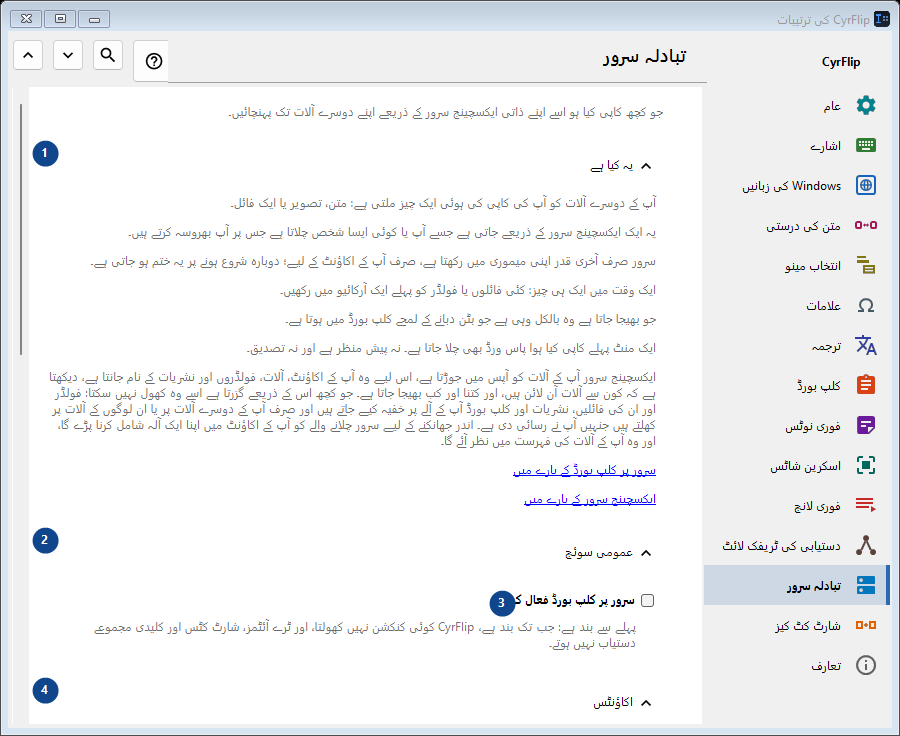
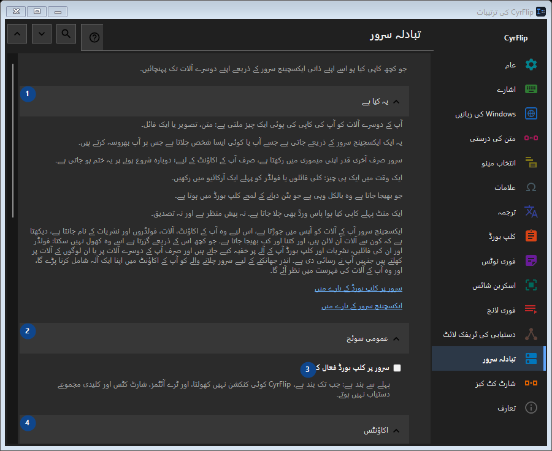

تبادلہ سرور
مقصد
جو کچھ کاپی کیا ہو اسے اپنے ذاتی ایکسچینج سرور کے ذریعے اپنے دوسرے آلات تک پہنچائیں۔


استعمال کی ترتیب
ترتیبات فوراً لاگو ہوتی ہیں۔ کوئی لازمی ترتیب نہیں؛ نیچے کے گروپ استعمال کریں۔
عناصر
1. یہ کیا ہے
درج شدہ کارروائی کے لیے یہ حکم استعمال کریں۔ قبول کرنے سے پہلے تصدیق پڑھیں۔
آپ کے شارٹ کٹ2. عمومی سوئچ
درج شدہ کارروائی کے لیے یہ حکم استعمال کریں۔ قبول کرنے سے پہلے تصدیق پڑھیں۔
آپ کے شارٹ کٹ3. سرور پر کلپ بورڈ فعال کریں
پہلے سے بند ہے: جب تک بند ہے، CyrFlip کوئی کنکشن نہیں کھولتا، اور ٹرے آئٹمز، شارٹ کٹس اور کلیدی مجموعے دستیاب نہیں ہوتے۔
آپ کے شارٹ کٹ4. اکاؤنٹس
درج شدہ کارروائی کے لیے یہ حکم استعمال کریں۔ قبول کرنے سے پہلے تصدیق پڑھیں۔
آپ کے شارٹ کٹ5. اکاؤنٹ شامل کریں..
جب تک «سرور پر کلپ بورڈ فعال کریں» بند ہے یہ دستیاب نہیں - پہلے وہ سوئچ آن کریں۔ یہ عنصر ابھی دستیاب نہیں۔ پہلے خصوصیت فعال کریں یا اندراج منتخب کریں۔
آپ کے شارٹ کٹ6. شارٹ کٹس
درج شدہ کارروائی کے لیے یہ حکم استعمال کریں۔ قبول کرنے سے پہلے تصدیق پڑھیں۔
آپ کے شارٹ کٹ7. کلپ بورڈ سرور پر بھیجیں
جب تک «سرور پر کلپ بورڈ فعال کریں» بند ہے یہ دستیاب نہیں - پہلے وہ سوئچ آن کریں۔ یہ عنصر ابھی دستیاب نہیں۔ پہلے خصوصیت فعال کریں یا اندراج منتخب کریں۔
آپ کے شارٹ کٹ8. تبدیل کریں - کلپ بورڈ سرور پر بھیجیں
جب تک «سرور پر کلپ بورڈ فعال کریں» بند ہے یہ دستیاب نہیں - پہلے وہ سوئچ آن کریں۔ یہ عنصر ابھی دستیاب نہیں۔ پہلے خصوصیت فعال کریں یا اندراج منتخب کریں۔
آپ کے شارٹ کٹ9. سرور سے کلپ بورڈ حاصل کریں
جب تک «سرور پر کلپ بورڈ فعال کریں» بند ہے یہ دستیاب نہیں - پہلے وہ سوئچ آن کریں۔ یہ عنصر ابھی دستیاب نہیں۔ پہلے خصوصیت فعال کریں یا اندراج منتخب کریں۔
آپ کے شارٹ کٹ10. تبدیل کریں - سرور سے کلپ بورڈ حاصل کریں
جب تک «سرور پر کلپ بورڈ فعال کریں» بند ہے یہ دستیاب نہیں - پہلے وہ سوئچ آن کریں۔ یہ عنصر ابھی دستیاب نہیں۔ پہلے خصوصیت فعال کریں یا اندراج منتخب کریں۔
آپ کے شارٹ کٹ11. ڈیسک ٹاپ پر «بھیجیں» رکھیں
جب تک «سرور پر کلپ بورڈ فعال کریں» بند ہے یہ دستیاب نہیں - پہلے وہ سوئچ آن کریں۔ یہ عنصر ابھی دستیاب نہیں۔ پہلے خصوصیت فعال کریں یا اندراج منتخب کریں۔
آپ کے شارٹ کٹ12. ڈیسک ٹاپ پر «حاصل کریں» رکھیں
جب تک «سرور پر کلپ بورڈ فعال کریں» بند ہے یہ دستیاب نہیں - پہلے وہ سوئچ آن کریں۔ یہ عنصر ابھی دستیاب نہیں۔ پہلے خصوصیت فعال کریں یا اندراج منتخب کریں۔
آپ کے شارٹ کٹ13. موصول فائلیں
درج شدہ کارروائی کے لیے یہ حکم استعمال کریں۔ قبول کرنے سے پہلے تصدیق پڑھیں۔
آپ کے شارٹ کٹ14. سرور سے موصول فائلوں کا فولڈر
جب تک «سرور پر کلپ بورڈ فعال کریں» بند ہے یہ دستیاب نہیں - پہلے وہ سوئچ آن کریں۔ یہ عنصر ابھی دستیاب نہیں۔ پہلے خصوصیت فعال کریں یا اندراج منتخب کریں۔
آپ کے شارٹ کٹ15. منتخب کریں - سرور سے موصول فائلوں کا فولڈر
جب تک «سرور پر کلپ بورڈ فعال کریں» بند ہے یہ دستیاب نہیں - پہلے وہ سوئچ آن کریں۔ یہ عنصر ابھی دستیاب نہیں۔ پہلے خصوصیت فعال کریں یا اندراج منتخب کریں۔
آپ کے شارٹ کٹ16. فولڈر کھولیں - سرور سے موصول فائلوں کا فولڈر
جب تک «سرور پر کلپ بورڈ فعال کریں» بند ہے یہ دستیاب نہیں - پہلے وہ سوئچ آن کریں۔ یہ عنصر ابھی دستیاب نہیں۔ پہلے خصوصیت فعال کریں یا اندراج منتخب کریں۔
آپ کے شارٹ کٹ